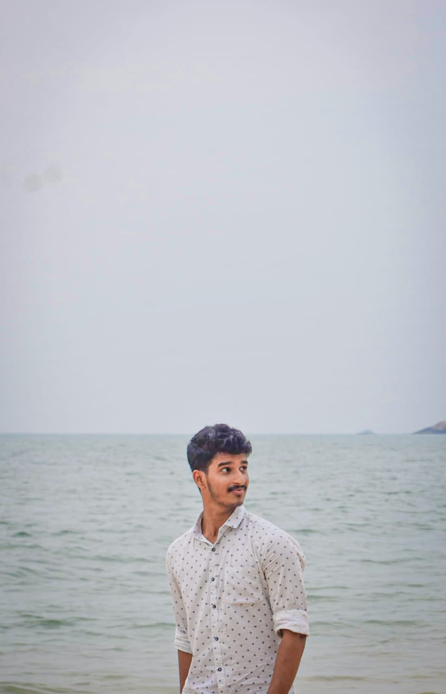

About Me
I am a passionate and dedicated 2nd-year Computer Science Engineering student with a keen interest in technology and innovation. My journey in the field of computer science has been fueled by my curiosity to understand how things work and a strong desire to create solutions that make a difference. Interests Programming: I enjoy exploring programming languages like Python, Java, and C++, and solving problems through coding. Artificial Intelligence and Machine Learning: I am fascinated by the potential of AI and ML in transforming industries and aspire to delve deeper into this domain. Web Development: Building websites and learning about front-end and back-end technologies is something I enjoy. Competitive Programming: I like tackling algorithmic challenges and improving my problem-solving skills on platforms like HackerRank and LeetCode. Skills Programming Languages: Python, C++, and Java. Web Development: HTML, CSS, and basic JavaScript. Collaboration Tools: Git, GitHub, and team collaboration platforms. Communication: Strong teamwork and presentation skills, developed through group projects and cultural activities. Aspirations As a budding computer science engineer, my goal is to: Develop innovative solutions to real-world problems using cutting-edge technologies like AI/ML. Gain expertise in full-stack development and contribute to impactful projects. Participate in hackathons and coding competitions to sharpen my skills and network with like-minded individuals. Pursue internships and industry opportunities to bridge the gap between academic learning and practical application. I am excited to continue learning, growing, and making meaningful contributions to the tech world.